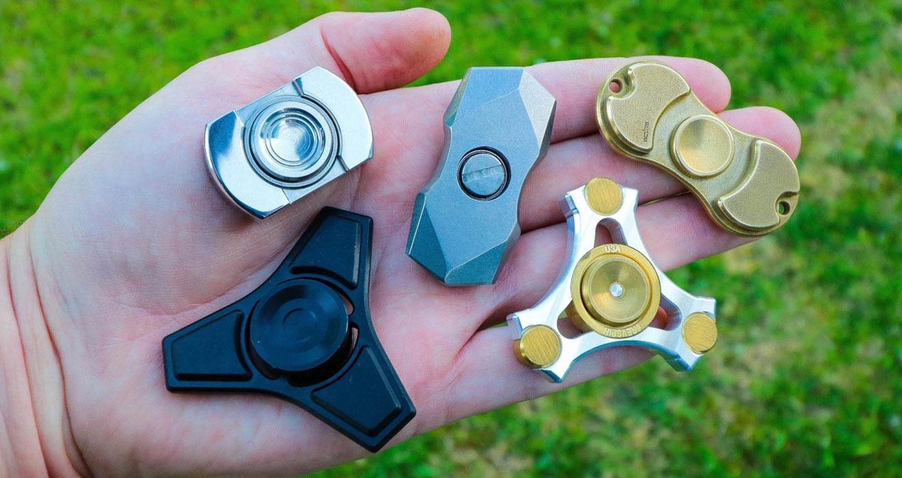
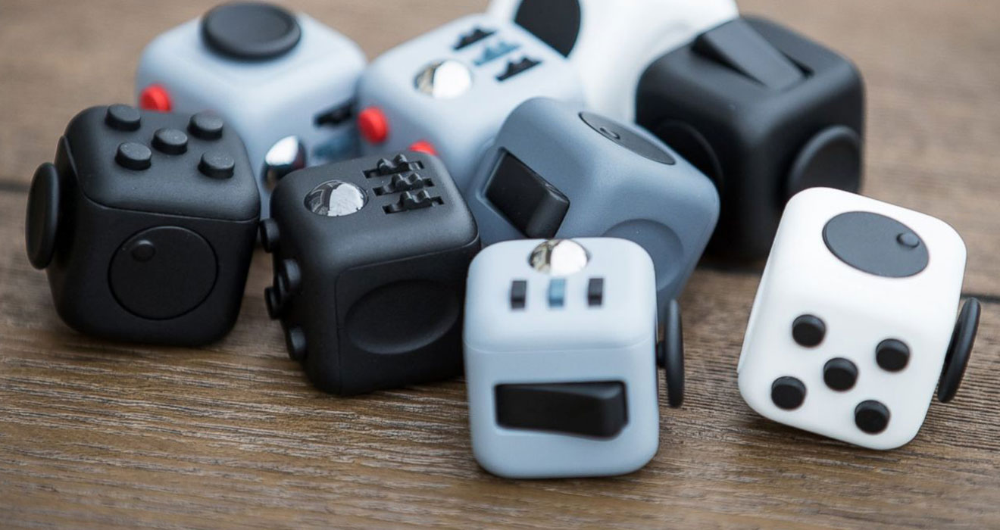
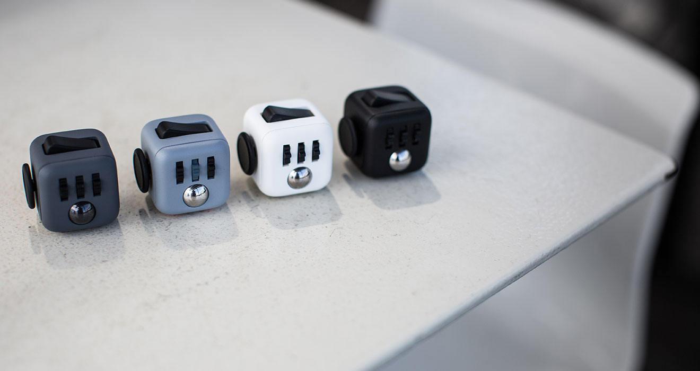

یکی از تغییراتی که انسان مدرن روزبهروز بیشتر از گذشته با آن دست و پنجه نرم میکند افزایش تقریباً سریع مشکلات روانی و ذهنی است که استرس، بیحوصلگی و مشغلۀ ذهنی را میتوان جزو همین موارد دانست. اخیرا وسیلههایی با نام فیجت وارد بازار شدهاند که مدعی هستند میتوانند از استرسها و تنشهای روزانه بکاهند. در این مطلب به مبحث استرس و رابطۀ آن با فیجت ها خواهیم پرداخت.
تقریباً همۀ ما به خوبی با «استرس» و نگرانی آشنا هستیم و قطعاً به دفعات سطوح مختلفی از آن را در جای جای زندگی خود احساس کردهایم. شروع یک شغل جدید، وارد یک رابطۀ تازه شدن، انواع امتحان مانند کنکور و آزمون گواهینامه و هزاران مورد دیگر همه از مواردی هستند که احتمالاً برای شخص همراه با استرس خواهند بود. در دنیای امروز همه چیز سرعت گرفته و کارها به زمان بسیار کمتری نسبت به گذشته احتیاج دارند و میتوان از پشت یک لپتاپ تقریباً به همهجای دنیا سفر کرد و کارها را به انجام رساند. همین سکون ممکن است در شخص ایجاد نوعی «بیحوصلگی» کند. «مشغلۀ ذهنی» نیز از موارد دیگری است که باز هم به علت سرعت گرفتن کارها و در نتیجه افزایش تعداد آنها و پیچیدهتر شدن زندگی روزانه ممکن است به سراغ خیلیها آمده باشد.
رای درک بهتر این تفاوت بیایید نگاهی به روش زندگی افرادی بکنیم که پیش از ما زندگی میکردند یا هنوز هم در روستاها زندگی میکنند و اسیر هیاهوی زندگی شهری و مدرن نشدهاند. یک فرد روستایی را در نظر بگیرید که صبح اول وقت از خواب بیدار شده و برای کسب روزی به سمت زمین کشاورزی خود روانه میشود و پس از اتمام کار که کاری ساده از لحاظ ذهنی (و احتمالاً سخت از لحاظ جسمانی) به سمت منزل بازگشته و شاید پس از ساعتی خوشوبش با اهالی محل به سمت منزل رفته و چند ساعتی به خوردن شام و گپ و گفت با اعضای خانواده میپردازد و فردا دوباره همه چیز از نو آغاز خواهد شد. چنین فردی اگرچه ممکن است روزهای تکراری داشته باشد و تعداد دغدغههای او انگشتشمار و ساده باشد اما زندگی سادهتر همیشه ذهنی آرامتر به همراه داشته است. قرنها بشر به همین شیوه زندگی کرد و تا سالها کسی نمیدانست استرس یا مشغلۀ ذهنی و بیقراری چیست.
البته قرار نیست که ما مانند کسانی زندگی کنیم که در روستاها مشغول زندگی هستند و آنچه گفته شد تنها به دلیل درک بیشتر روش زندگی خودمان بود. حالا در عصری که زندگی شهری بدون استرس و نگرانی تقریباً غیرممکن به نظر میرسد طبیعی است که راهکارهایی برای مقابله با این آفت زندگی آرام ارائه شده باشد. یکی از این راهکارها تولید وسیلههای کوچکی با نام Fidget Toys یا همان فیجت است که اخیراً هم سروصدای زیادی در دنیا به پا کردهاند و روزبهروز محبوبیت آنها در حال افزایش است.
بیایید در ابتدا نگاهی بیندازیم به معنای لغوی این وسیلههای جذاب: اگر Fidget را در دیکشنری جستجو کنید به چنین چیزی بر خواهید خورد: «بیآرامی، بی قراری، بخودپیچی، لول خوری، بی قراربودن، ناراحت بودن». این کلمه در زبان انگلیسی هم به صورت اسم و هم به صورت فعل استفاده میشود. حتماً شما در دانشگاه، مطب دکتر یا بانک کسانی را دیدهاید که جایی نشسته باشند و در حال انجام یک عمل تکرار شونده مانند تکان دادن پا در ریتمهای منظم بودهاند. این عمل یا عادت عصبی درست همان چیزی است که کلمۀ فیجت به آن اشاره دارد.
Fidget Toy ها آمدهاند تا به این عمل تکرار شونده رسمیت ببخشند و شخص را نسبت به اتفاقی که در حال تجربهاش است آگاه کنند. به بیان دیگر فیجت ها قرار است که عمل تخلیۀ عصبی را به راحت ترین و البته کم هزینه ترین شکل ممکن برایمان انجام دهند. دو مورد از محبوبترین این وسیلهها Fidget Spinerها و Fidget Cube ها هستند که در این مطلب به معرفی آنها خواهیم پرداخت.
فیجت اسپینر یک وسیلۀ سه پر ، دوپر یا چند پر است که قسمت مرکزی پرههای آن را را یک بلبرینگ تشکیل داده تا کاربر قادر باشد با نگه داشتن بخش مرکزی پرهها را چرخانده و به همین راحتی عمل تخلیۀ عصبی را شروع کند! طبق آنچه در منابعی همچون Guardian، New York Times و New York Post ذکر شده این وسیله برای نخستین بار توسط شخصی به نام Catherine Hettinger اختراع شد.
به گفتۀ خانم هتینگر ایدۀ ساخت این وسیله زمانی به ذهنش خطور کرد که دید کودکان فلسطینی وسیله ای دارند که با چرخاندن آن به سمت نیروهای اسرائیلی سنگ پرت میکنند. دیدن همین صحنه باعث شد که خانم هتینگر به فکر وسیلهای بیفتد که بتوان با چرخاندن آن از فشارهای عصبی کم کرد و آرامش بیشتری را تجربه کرد. البته این خانم مخترع در جایی هم عنوان کرده که ایدۀ ساخت فیجت اسپینر به سالها پیشتر بازمیگردد و فقط با دیدن کودکان فلسطینی به تکامل رسیده است. گویا خانم هتینگر در دوران جوانی به نوعی بیماری خود ایمنی مبتلا بوده که باعث ضعف شدید در عضلات میشده و همین مسئله مانع از بازی کردن او با دختر خردسالش میشده، اون در آن زمان وسیلهای با متریال بسیار ساده درست کرده بود که قابلیت چرخش داشته و دختربچه را ساعتها سرگرم میکرده است.
با گذشت سالها از اختراع این وسیلۀ کوچک حالا در سال ۲۰۱۷ شاهد آن هستیم که این وسیله در میان قشرهای روزبهروز در حال بیشتر شدن است به طوری که اواخر سال گذشته مطلبی در وبسایت معبر Forbes منتشر شد که فیجت اسپینرها را یک وسیلۀ ضروری برای هر کارمندی معرفی کرده بود. استفاده از این وسیلهها در میان کودکان نیز تا جایی همه گیر شده که بسیاری از مدارس اروپایی همراه داشتن آن را توسط دانشآموزان ممنوع اعلام کردهاند.
فیجت کیوبها انواع دیگری از فیجت ها هستند که حداقل در ایران شناخته شده تر هستند و مدتی است که در بازار حضور دارند. این وسیلهها را بیشتر با نام مکعب آرامش میشناسند. حتما برایتان پیش آمده که به دلایل مختلف به صورت ناخودآگاه اگر خودکار فشاری در دست داشتهاید شروع کرده به فشار دادن متوالی دکمۀ سر خودکار، یا اینکه اگر گوشیتان در یک قاب ژلهای قرار دارد احتمالا برایتان پیش آمده که به صورت غیر ارادی یکی از گوشههای آن را هی خم کرده اید و از گوشی جدا کردهاید و دوباره جا زدهاید. یا اگر سوئیچ خودروتان از نمونههای تاشو است که با فشار دادن یک دکمه باز میشود قطعا باز و بسته کردن مداوم سوئیچ برایتان ناآشنا نیست. یا حتما دیدهاید که خانمها در مواقع خاصی موی خود را به صورت ناخودآگاه دور دستشان میپیجند. به نظر میرسد که همۀ این رفتارها و عادتها راهکارهای غریزی ذهن برای فرار از دغدغه و مشغلۀ فکری باشد.
مکعب آرامش مجموعهای از دکمهها، و قسمتهای حرکتی است که چند روش مختلف برای تخلیۀ فشار عصبی در اختیار شما قرار میدهد تا شما قادر باشید با عملی شبیه به خاموش و روشن کردن، چرخاندن چرخدندهها، غلطاندن گوی، چرخاندن دیسک و چند حرکت دیگر تمام مشغلههای ذهنی خود را با استفاده از این مکعب آرامش تخلیه کنید. این مکعب از پروژههایی بود که در سال گذشته توانست با فروش رویایی شش میلیون دلار در لیست پربازده ترین پروژههای نوآورانه جا خوش کند در حالی که انتظار میرفت فروش آن تنها ۱۵ هزار دلار باشد.
اصلی ترین سوالی که پس از مطالعه کردن این مطلب ممکن است به ذهنتان خطور کند این است که آیا اصلا فیجتها تاثیری در بهبود آرامش روانی و قدرت تمرکز فرد ایجاد میکنند یا خیر. واقعیت این است که با توجه به نوظهور بودن این وسیلهها هنوز پژوهش معتبری درمورد تاثیر واقعی آنها بر تخلیۀ عصبی یا ایجاد تمرکز انجام نشده است. اما شواهد و شنیدههایی در دنیای مجازی وجود دارند که ثابت میکنند تعداد زیادی از استفاده کنندگان ان در مدت کمی شاهد تاثیر و آرامش ایجاد شده توسط فیجت اسپینرها بوده اند. در عین حال میتوان اینطور نتیجه گرفت که عادتهای عصبی همگی راهکارهای اتوماتیک وار ذهن برای تخلیۀ بخشی از تنشها هستند و اگر این مسئله را بپذیریم ناخودآگاه تاثیر مثبت فیجتها نیز آشکار میشود.
نتیجه ای یافت نشد